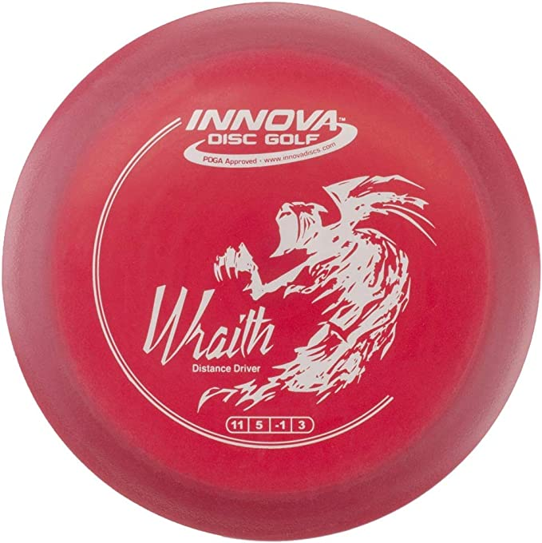

Reading a Disc
This disc is an "Innova Star Wraith". "Innova" is the company that makes this disc. "Star" refers to the type of plastic, and each company has its own names for their plastics. And "Wraith" refers to the name given to the mold or shape
of the disc. Every disc will have 4 numbers either on the disc itself or they can be found online. These numbers stand for Speed/Glide/Turn/Fade. The numbers are as follows:
- Speed: How fast the disc must be thrown to get the intended flight path. There are 4 types of discs: putter, mid-range, fareway driver, and distance driver. Putters comprise speeds 1-3, mid-ranges are 4-6, fareway drivers are 7-8,
and distance drivers are 9-14.
- Glide: Pretty self-explanitory, how much the disk tries to stay in/ride the air.
- Turn: A discs tendency to go against the natural curve of a throw. When you throw, "Turn" is goes toward whichever side of your body the disc didn't start. For example a right handed "Backhand" starts of your left side, so "Turn" goes right.
- Fade: How hard the disc will fight down to the ground after it loses steam. A disc will fade in the same direction as the side of your body is started on. It will always fade if given enough time in the air.
Note: if you throw with more power/speed than intended, the disc will fly with more turn and less fade. If thrown with less speed, the disc will have more fade and less turn.

Common Terms of Basic Throws
- Backhand: The back of the hand holding the disc moves forward during the throw
- Forehand: The front of the hand holding the disc moves forward during the throw
- Hyzer: The angle of the disc when released from the hand has the top facing the direction it would fade
- Anhyzer: The angle of the disc when released from the hand has the top facing the direction it would turn
- Hyzer Flip: The disc is released on Hyzer but will turn to either "flip up", level, and go straight or "turn over" to travel opposite of the eventual fade.
- Up / Upshot / Approach: A throw intended to land close to the basket
- Putt: A throw with no run-up intended to go into the basket
- Run-up: A sequence of steps and motions leading up to throwing the disc intended to build momentum and set proper posture to put power into the disc.
- Box: Usually said as "You've got the box" meaning you throw first.
- Chain-out: When the disc hits the chains in the basket but doesn't stay in.

Udisc
Udisc is an app for you phone for disc golfers. You can find courses and events, rules, and save score cards during rounds. It is very helpful especially when playing a new course
because it uses GPS to show you where each tee-pad and basket is, and uses your location to tell you which way to go. The app has most of its features available in the free version,
the main one missing being hosting scorecards with other udisc users.

Youtube
Youtube has a ton of tips and form videos to check out. I personally have learned a lot from watching OverthrowDiscGolf.